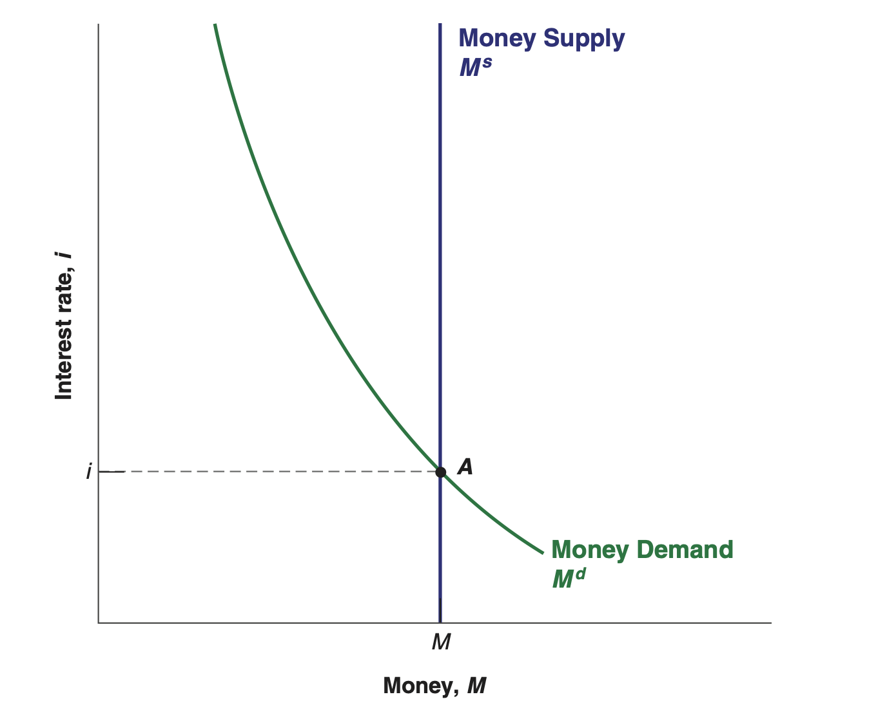
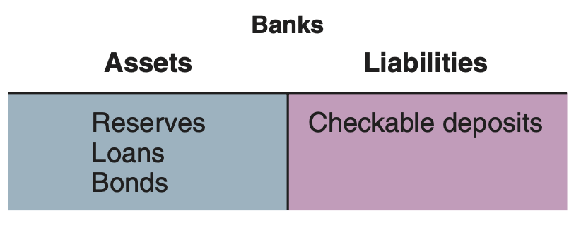

EC 235 | Fall 2023
Required readings:
By studying the goods market, we have covered the real side of the economy.
However, only looking at the real side is not sufficient for a complete understanding of the macroeconomy.
For instance, if households want to save money, it is likely that they will need a bank account where they may put their money.
Furthermore, firms rarely purchase new machinery using their own funds. They usually need some financing.
Thus, the financial side of the economy is just as important as the real.
First, a bit of semantics:
Money ($) is the medium we use to pay for transactions.
Income is what people earn from working (wages and salaries), as well as any other flow such as interest and dividends.
Wealth is a stock variable, the value of one’s financial assets minus financial liabilities.
Finally, saving is the portion of disposable income one does not spend.
Given someone’s wealth, they may decide to keep saving money or to further increase this wealth.
Then, they face a choice between the two most important financial assets:
The fundamental difference between money and bonds has to do with two points:
Bonds pay interest; money does not;
No one can pay for transactions using bonds, only with money.
So how can one balance bond ownership and money holding?
This boils down to two factors:
One’s level of transactions;
The interest rate on bonds.
Given this dilemma, we may model this situation mathematically.
The demand for money (Md) in the whole economy is the sum of all individual demands for money by households and firms, and can be represented by:
\[ M^d = PY \cdot L(i) \hspace{2cm} \dfrac{\partial M^d}{\partial{PY}}>0 \ ; \ \dfrac{\partial M^d}{\partial{i}}<0 \]
where PY is nominal income and L(i) is a liquidity function.
While the demand for money increases in proportion to increases in nominal income (Y), people will hold less money in liquid form the higher the interest rate (i).
The equation \(M^d = PY \cdot L(i)\) summarizes the demand for money.
But the analysis is not complete without the supply of money.
We will for now assume that the economy’s central bank supplies an amount M of money to the entire economy:
\[ M^s = M \]
where the s superscript denotes supply.
As we once again have supply and demand equations, we can reach an equilibrium relation:
\[ M^s = M^d \]
\[ M^s = PY \cdot L(i) \]
The variable responsible for bringing the equilibrium between money demand and money supply is the interest rate (i).

Using the previous figure as a reference, what happens when:
To model money supply, we assumed that the central bank decides on a quantity of money to be made available in the economy, denoted by Ms.
However, this process is more complicated in real life than just a decision made by a “central bank entity.”
Central banks change the supply of money in an economy by either buying or selling in bonds in financial markets.
These actions are called open market operations (OMO).
If the central bank wants to decrease the amount of money in the economy, it sells bonds and removes liquid money from circulation, as it receives in money exchange for the bonds.
If it wants to increase the amount of money in the economy, it buys bonds and pays for them by creating money.
Whenever either of these actions take place, the central bank is engaging in monetary policy.
A monetary policy is labeled expansionary when it expands the supply of money (Ms) by buying bonds from the public.
A monetary policy is labeled contractionary when it decreases the supply of money (Ms) by selling bonds to the public.
Let us investigate these two situations graphically.
Since the supply of money is changed through bond markets, let us investigate these further.
How are bond prices related to the interest rate in the economy?
If one buys a bond today and it promises to pay, say $100 in a year, the rate of return (i.e., the interest rate) on this bond is given by
\[ i = \dfrac{\$100 - P_B}{P_B} \]
where PB is the price of the bond.
Given the previous formula, what is the interest rate (i) when:
The price of the bond (PB) is $95?
The price of the bond (PB) is $110?
The price of the bond (PB) is $150?
Can we derive a relationship between bond prices and the interest rate?
Now we can fully understand how Open Market Operations work.
Suppose the central bank engages in an expansionary operation, buying bonds in the bond market and paying for them by creating money.
As the central bank buys bonds, the demand for bonds goes up, increasing their price.
Conversely, the interest rate on bonds goes down.
This way, the central bank has increased the money supply.
This way, monetary policy affects interest rates.
By buying or selling bonds in exchange for money, the central bank affects the price of bonds, and by implication, the interest rate on bonds.
In the real world, money includes not only currency but also checkable deposits.
And checkable deposits are supplied not by the central bank but by (private) banks.
Modern economies are characterized by the existence of many types of financial intermediaries—institutions that receive funds from people and firms and use these funds to buy financial assets or to make loans to other people and firms.

EC 235 - Prof. Santetti